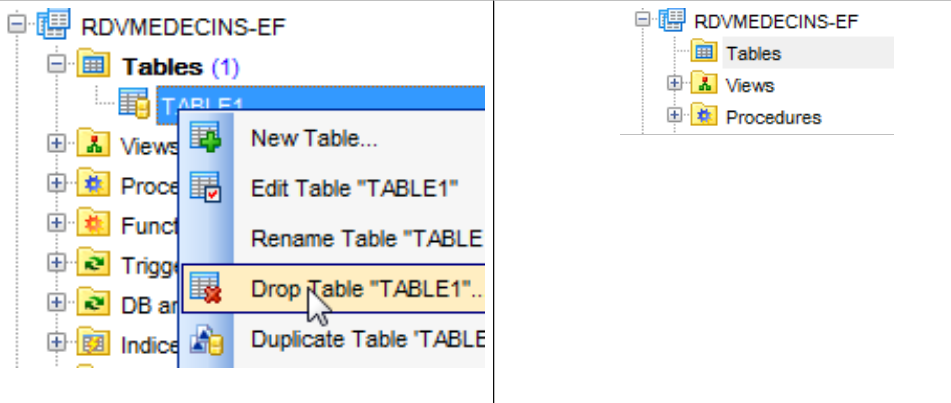

5. Caso di studio con Oracle Database Express Edition 11g Release 2
5.1. Installazione degli strumenti
Gli strumenti da installare sono i seguenti:
- il SGBD: [http://www.oracle.com/technetwork/products/express-edition/downloads/index.html];
- uno strumento di amministrazione: EMS SQL Manager for Oracle Freeware [http://www.sqlmanager.net/fr/products/oracle/manager/download];
- un client Oracle per .NET: ODAC 11.2 Release 5 (11.2.0.3.20) con Oracle Developer Tools per Visual Studio: [http://www.oracle.com/technetwork/developer-tools/visual-studio/downloads/index.html].
Negli esempi che seguono, l'utente system ha come password system.
Avviamo Oracle [1] e poi lo strumento [SQL Manager Lite for Oracle] con cui gestiremo SGBD e [2].
 |
- in [3], ci colleghiamo a un database esistente;
 |
- in [4], utilizziamo il servizio Oracle XE per effettuare la connessione;
- in [5], si indica il nome del database XE;
- in [6], ci si connette come system / system;
- in [7], si chiude la procedura guidata;
 |
- in [8], si effettua l'accesso al database;
- in [9], si è connessi;
- poiché ci siamo collegati come utente system / system, che dispone di diritti estesi, potremo, ad esempio, gestire gli utenti [10];
 |
- in [11], si crea un nuovo utente;
- in [12], si chiamerà [RDVMEDECINS-EF];
- in [13], e avrà la password rdvmedecins;
- in [14], si conferma la creazione dell'utente;
- in [15], l'utente è stato creato;
 |
- in [16], l'utente [RDVMEDECINS-EF] è anche uno schema di database;
- in [17], l'utente così come è stato creato non dispone di diritti sufficienti. Glieli assegniamo tramite uno script SQL;
 |
- in [18], lo script viene eseguito;
- in [19], proveremo ad accedere con l'identità di [RDVMEDECINS-EF] per vedere cosa può fare. A tal fine, iniziamo registrando un nuovo database in [EMS Manager];
 |
- in [19], ci si connette tramite il servizio XE;
- in [20], ci si connette con l’identità RDVMEDECINS-EF / rdvmedecins;
- in [21], si assegna un alias che riflette il nome dell'utente connesso;
- in [22], ci si connette a Oracle con le informazioni fornite;
 |
 |
- in [22], siamo riusciti a collegarci;
- in [23], si tenta di creare una tabella nello schema [RDVMEDECINS-EF];
- in [24], si definisce una tabella qualsiasi;
- in [25], si convalida la sua definizione;
 |
- in [26], la tabella è stata creata. La si elimina;
- in [27], è stata eliminata.
Ora che disponiamo di un utente con diritti sufficienti, creeremo il progetto VS 2012 che genererà le tabelle dello schema [RDVMEDECINS-EF] a partire dalla definizione delle entità.
5.2. Creazione del database a partire dalle entità
Iniziamo duplicando la cartella del progetto [RdvMedecins-SqlServer-01] in [RdvMedecins-Oracle-01] e [1]:
 |
- in [2]; in VS 2012, eliminiamo il progetto [RdvMedecins-SqlServer-01] dalla soluzione;
 |
- in [3], il progetto è stato rimosso;
- in [4], ne aggiungiamo un altro. Questo è contenuto nella cartella [RdvMedecins-Oracle-01] che abbiamo creato in precedenza;
 |
- in [5], il progetto caricato si chiama [RdvMedecins-SqlServer-01];
- in [6], ne modifichiamo il nome in [RdvMedecins-Oracle-01]
 |
- in [7], si aggiunge un altro progetto alla soluzione. Questo proviene dalla cartella [RdvMedecins-SqlServer-01] del progetto che abbiamo eliminato dalla soluzione in precedenza;
- in [8], il progetto [RdvMedecins-SqlServer-01] è stato reinserito nella soluzione.
Il progetto [RdvMedecins-Oracle-01] è identico al progetto [RdvMedecins-SqlServer-01]. Dobbiamo apportare alcune modifiche. In [App.config], modificheremo la stringa di connessione e il progetto [DbProviderFactory], che dovrà essere adattato a ciascun progetto SGBD.
<!-- stringa di connessione al database -->
<connectionStrings>
<add name="monContexte" connectionString="Data Source=(DESCRIPTION=(ADDRESS_LIST=(ADDRESS=(PROTOCOL=TCP)(HOST=localhost)(PORT=1521)))(CONNECT_DATA=(SERVER=DEDICATED)(SERVICE_NAME=XE)));User Id=RDVMEDECINS-EF;Password=rdvmedecins;" providerName="Oracle.DataAccess.Client" />
</connectionStrings>
<!-- il provider factory -->
<system.data>
<DbProviderFactories>
<remove invariant="Oracle.DataAccess.Client" />
<add name="Oracle Data Provider for .NET" invariant="Oracle.DataAccess.Client" description="Oracle Data Provider for .NET" type="Oracle.DataAccess.Client.OracleClientFactory, Oracle.DataAccess, Version=4.112.3.0, Culture=neutral, PublicKeyToken=89b483f429c47342" />
</DbProviderFactories>
</system.data>
- riga 3: l’utente e la sua password;
- righe 6-11: il DbProviderFactory. La riga 9 fa riferimento a un DLL e a un [Oracle.DataAccess] che non abbiamo. Lo si ottiene con NuGet [1]:
 |
- in [2], nella barra di ricerca si digita la parola chiave oracle;
- in [3], si seleziona il pacchetto [Oracle Data Provider] corrispondente. Si tratta del connettore ADO.NET di Oracle;
 |
- in [4], il riferimento aggiunto;
- in [5], in [App.config], occorre inserire la versione corretta di DLL. La si trova nelle sue proprietà.
Nel file [Entites.cs], è necessario adattare lo schema delle tabelle che verranno generate. Lo schema utilizzato è il nome dell’utente proprietario delle tabelle.
[Table("MEDECINS", Schema = "RDVMEDECINS-EF")]
public class Medecin : Personne
{...}
[Table("CLIENTS", Schema = "RDVMEDECINS-EF")]
public class Client : Personne
{...}
[Table("RVS", Schema = "RDVMEDECINS-EF")]
public class Rv
{...}
[Table("CRENEAUX", Schema = "RDVMEDECINS-EF")]
public class Creneau
{...}
Configuriamo l'esecuzione del progetto:
 |
- in [1], assegniamo un altro nome all'assembly che verrà generato;
- in [2], si assegna anche un altro spazio dei nomi predefinito;
- in [3], si indica il programma da eseguire.
A questo punto non ci sono errori di compilazione. Eseguiamo il programma [CreateDB_01]. Si ottiene la seguente eccezione:
Ricordiamo di aver riscontrato lo stesso errore con MySQL. È legato al tipo del campo Timestamp delle entità. Apportiamo la stessa modifica. Nelle entità, sostituiamo le tre righe
[Column("TIMESTAMP")]
[Timestamp]
public byte[] Timestamp { get; set; }
con le seguenti:
[ConcurrencyCheck]
[Column("VERSIONING")]
public int? Versioning { get; set; }
Si modifica quindi il tipo della colonna, che passa da byte[] a int?. Ricordiamo che sia per SQL Server che per MySQL, la colonna delle tabelle utilizzata per gestire la concorrenza di accesso riceveva un valore da SGBD ogni volta che veniva inserita o modificata una riga. D'ora in poi, utilizzeremo un campo dell'entità che sarà un numero intero. Nel SGBD, utilizzeremo delle procedure memorizzate per incrementare questo numero intero di un'unità ogni volta che verrà inserita o modificata una riga.
Applichiamo la modifica precedente alle quattro entità, quindi rieseguiamo l’applicazione. A questo punto otteniamo il seguente errore:
La riga 1 indica che il connettore ADO.NET di Oracle non è in grado di eliminare il database esistente. Ricordiamo cosa sta succedendo. Il codice di [CreateDB_01.cs] è il seguente:
using System;
using System.Data.Entity;
using RdvMedecins.Models;
namespace RdvMedecins_01
{
class CreateDB_01
{
static void Main(string[] args)
{
// si crea il database
Database.SetInitializer(new RdvMedecinsInitializer());
using (var context = new RdvMedecinsContext())
{
context.Database.Initialize(false);
}
}
}
}
La riga 15 avvia l'esecuzione della classe [RdvMedecinsInitializer] (riga 12). Il codice è il seguente:
public class RdvMedecinsInitializer : DropCreateDatabaseAlways<RdvMedecinsContext>
Deriva dalla classe [DropCreateDatabaseAlways], che tenta di eliminare e poi ricreare il database. Modifichiamo la definizione della classe come segue:
public class RdvMedecinsInitializer : CreateDatabaseIfNotExists<RdvMedecinsContext>
La creazione del database avviene solo se questo non esiste. Eseguiamo nuovamente [CreateDB_01.cs] e in questo caso non si verificano più errori. Tuttavia, in [EMS Manager], si nota che il database [RDVMEDECINS-EF] è rimasto vuoto. Poiché EF 5 ha rilevato un database esistente, non ha eseguito alcuna operazione. Esegue un'operazione solo se il database non esiste. A questo punto, si entra in un circolo vizioso. Infatti, la stringa di connessione per SGBD è la seguente:
<connectionStrings>
<add name="monContexte" connectionString="Data Source=(DESCRIPTION=(ADDRESS_LIST=(ADDRESS=(PROTOCOL=TCP)(HOST=localhost)(PORT=1521)))(CONNECT_DATA=(SERVER=DEDICATED)(SERVICE_NAME=XE)));User Id=RDVMEDECINS-EF;Password=rdvmedecins;" providerName="Oracle.DataAccess.Client" />
</connectionStrings>
Riga 2: la stringa di connessione non utilizza il nome di un database, ma il nome di un utente. Quest’ultimo deve esistere.
Siamo quindi costretti a creare manualmente il database [RDVMEDECINS-EF] con lo strumento [EMS Manager for Oracle]. Non descriviamo tutte le fasi, ma solo quelle più importanti.
Il database Oracle sarà il seguente:
Le tabelle
 |
Le diverse tabelle presentano le chiavi primarie e esterne che queste stesse tabelle avevano nei due esempi precedenti. Le chiavi esterne presentano in particolare l’attributo ON DELETE CASCADE.
Le sequenze
Qui sono state create delle sequenze Oracle. Si tratta di generatori di numeri consecutivi. Ce ne sono 5: [1].
 |
- in [2], vediamo le proprietà della sequenza [SEQUENCE_CLIENTS]. Essa genera numeri consecutivi con incrementi di 1, a partire da 1 fino a un valore molto elevato.
Tutte le sequenze sono costruite secondo lo stesso modello.
- [SEQUENCE_CLIENTS] verrà utilizzata per generare la chiave primaria della tabella [CLIENTS];
- [SEQUENCE_MEDECINS] sarà utilizzata per generare la chiave primaria della tabella [MEDECINS];
- [SEQUENCE_CRENEAUX] verrà utilizzata per generare la chiave primaria della tabella [CRENEAUX];
- [SEQUENCE_RVS] verrà utilizzato per generare la chiave primaria della tabella [RVS];
- [SEQUENCE_VERSIONS] verrà utilizzato per generare i valori delle colonne [VERSIONING] di tutte le tabelle.
I trigger
Un trigger è una procedura eseguita da SGBD prima o dopo un evento (Inserimento, Modifica, Cancellazione) in una tabella. Ne abbiamo 8 [1]:
 |
Diamo un'occhiata al codice DDL del trigger [TRIGGER_PK_CLIENTS] che popola la chiave primaria della tabella [CLIENTS]:
- righe 1-5: prima di ogni operazione INSERT sulla tabella [CLIENTS];
- riga 6: la colonna [ID] assumerà il valore successivo della sequenza [SEQUENCE_CLIENTS]. La chiave primaria avrà così valori consecutivi forniti dalla sequenza.
I trigger [TRIGGER_PK_MEDECINS, TRIGGER_PK_CRENEAUX, TRIGGER_PK_RVS] funzionano in modo analogo.
Esaminiamo il codice DDL del trigger [TRIGGER_VERSIONS_CLIENTS] che popola la colonna [VERSIONING] della tabella [CLIENTS]:
- righe 1-2: prima di ogni operazione INSERT o UPDATE sulla tabella [CLIENTS];
- riga 8: la colonna [VERSIONING] assumerà il valore successivo della sequenza [SEQUENCE_VERSIONS]. La colonna [VERSIONING] avrà quindi valori consecutivi forniti dalla sequenza.
I trigger [TRIGGER_VERSION_MEDECINS, TRIGGER_VERSION_CRENEAUX, TRIGGER_VERSION_RVS] funzionano in modo analogo. Le quattro colonne [VERSIONING] traggono i propri valori dalla stessa sequenza.
Lo script per la generazione delle tabelle del database Oracle [RDVMEDECINS-EF] è stato inserito nella cartella [RdvMedecins / databases / oracle]. Il lettore potrà caricarlo ed eseguirlo per creare le proprie tabelle.
Una volta fatto ciò, è possibile eseguire i vari programmi del progetto. Essi forniscono gli stessi risultati ottenuti con SQL Server, ad eccezione del programma [ModifyDetachedEntities], che va in crash per lo stesso motivo per cui si era bloccato con MySQL. Il problema si risolve allo stesso modo. È sufficiente copiare il programma [ModifyDetachedEntities] dal progetto [RdvMedecins-MySQL-01] nel progetto [RdvMedecins-Oracle-01]. A questo punto si presenta un nuovo problema:
- righe 1-4: il client distaccato è stato aggiornato correttamente;
- riga 6: un'eccezione nota. È quella che si verifica quando si tenta di modificare un'entità senza disporre della versione corretta. In questo caso, però, non si voleva modificare ma eliminare l'entità:
// eliminazione entità fuori contesto
using (var context = new RdvMedecinsContext())
{
// qui abbiamo un nuovo contesto vuoto
// si inserisce client1 nel contesto con lo stato «eliminato»
context.Entry(client1).State = EntityState.Deleted;
// si salva il contesto
context.SaveChanges();
}
EF 5 ha rifiutato di eliminare client1 dal database, poiché client1 (riga 6) non aveva la stessa versione. Non avevamo riscontrato questo problema con MySQL. Ci stiamo rendendo conto gradualmente che i connettori ADO.NET di diversi SGBD presentano lievi differenze. Corregiamo come segue:
using (var context = new RdvMedecinsContext())
{
// qui abbiamo un nuovo contesto vuoto
// si inserisce "client1" nel contesto per eliminarlo
context.Clients.Remove(context.Clients.Find(client1.Id));
// si salva il contesto
context.SaveChanges();
}
e funziona.
5.3. Architettura multistrato basata su EF 5
Torniamo al nostro caso di studio descritto al paragrafo 2, pagina 7.
 |
Inizieremo con la creazione del livello di accesso ai dati [DAO]. A tal fine, duplichiamo il progetto console VS 2012 [RdvMedecins-SqlServer-02] in [RdvMedecins-Oracle-02] [1]:
 |
- in [2], eliminiamo il progetto [RdvMedecins-SqlServer-02];
 |
- in [3], si aggiunge un progetto esistente alla soluzione. Lo si prende dalla cartella [RdvMedecins-Oracle-02] appena creata;
- in [4], il nuovo progetto porta il nome di quello che è stato eliminato. Ne cambieremo il nome;
 |
- in [5], abbiamo modificato il nome del progetto;
- in [6], si modificano alcune delle sue proprietà, come in questo caso il nome dell’assembly;
- in [7], la cartella [Models] viene eliminata per essere sostituita dalla cartella [Models] del progetto [RdvMedecins-Oracle-01]. Infatti, i due progetti condividono gli stessi modelli.
 |
- in [8], i riferimenti attuali del progetto;
- in [9], è stato aggiunto il connettore ADO.NET di Oracle con lo strumento NuGet.
Nel file [App.config], si sostituiscono le informazioni del database SQL Server con quelle del database Oracle. Queste si trovano nel file [App.config] del progetto [RdvMedecins-Oracle-01]:
<!-- stringa di connessione al database -->
<connectionStrings>
<add name="monContexte" connectionString="Data Source=(DESCRIPTION=(ADDRESS_LIST=(ADDRESS=(PROTOCOL=TCP)(HOST=localhost)(PORT=1521)))(CONNECT_DATA=(SERVER=DEDICATED)(SERVICE_NAME=XE)));User Id=RDVMEDECINS-EF;Password=rdvmedecins;" providerName="Oracle.DataAccess.Client" />
</connectionStrings>
<!-- il provider factory -->
<system.data>
<DbProviderFactories>
<remove invariant="Oracle.DataAccess.Client" />
<add name="Oracle Data Provider for .NET" invariant="Oracle.DataAccess.Client" description="Oracle Data Provider for .NET" type="Oracle.DataAccess.Client.OracleClientFactory, Oracle.DataAccess, Version=4.112.3.0, Culture=neutral, PublicKeyToken=89b483f429c47342" />
</DbProviderFactories>
</system.data>
Anche gli oggetti gestiti da Spring cambiano. Attualmente si ha:
<!-- Configurazione Spring -->
<spring>
<context>
<resource uri="config://spring/objects" />
</context>
<objects xmlns="http://www.springframework.net">
<object id="rdvmedecinsDao" type="RdvMedecins.Dao.Dao,RdvMedecins-SqlServer-02" />
</objects>
</spring>
La riga 7 fa riferimento all’assembly del progetto [RdvMedecins-SqlServer-02]. L’assembly è ora [RdvMedecins-Oracle-02].
Fatto ciò, siamo pronti per eseguire il test del livello [DAO]. Prima è necessario assicurarsi di popolare il database (programma [Fill] del progetto [RdvMedecins-Oracle-01]). Il programma di test va a buon fine.
Creiamo il DLL del progetto come è stato fatto per il progetto [RdvMedecins-SqlServer-02] e raggruppiamo l’tutti i file DLL del progetto in una cartella [lib] creata all’interno di [RdvMedecins-Oracle-02]. Questi saranno i riferimenti del progetto web [RdvMedecins-Oracle-03] che seguirà.
 |
Ora siamo pronti per costruire il livello [ASP.NET] della nostra applicazione:
 |
Partiremo dal progetto [RdvMedecins-SqlServer-03]. Duplichiamo la cartella di questo progetto in [RdvMedecins-Oracle-03] e [1]:
 |
- in [2], con VS 2012 Express per il web, apriamo la soluzione della cartella [RdvMedecins-Oracle-03];
- in [3], modifichiamo sia il nome della soluzione che quello del progetto;
 |
- in [4], i riferimenti attuali del progetto;
- in [5], li eliminiamo;
- in [6], per sostituirli con riferimenti a DLL che abbiamo appena salvato in una cartella [lib] del progetto [RdvMedecins-Oracle-02].
Non ci resta che modificare il file [Web.config]. Sostituiamo il suo contenuto attuale con quello del file [App.config] del progetto [RdvMedecins-Oracle-02]. Fatto ciò, eseguiamo il progetto web. Funziona. Non dimentichiamo di popolare il database prima di eseguire l’applicazione web.